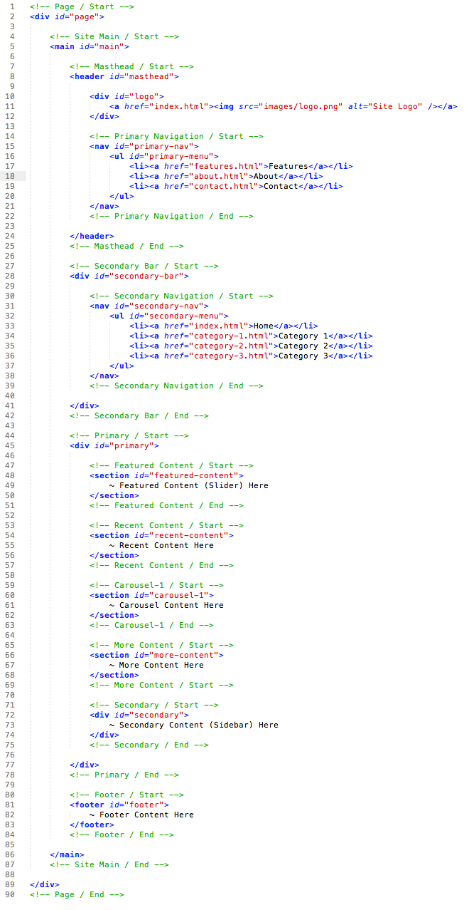

Created: 08/16/2014
By: Roy Guan
Email: support@theme-junkie.com
Thank you for purchasing my template. If you have any questions that are beyond the scope of this help file, please feel free to email via my user page contact form here. Thanks so much!
This template is a responsive layout with two columns. All of the information within the main content area is nested within a div with an id of "primary". The sidebar's (column #2) content is within a div with an id of "secondary". The general template structure is the same throughout the template. Here is the general structure.
If you would like to edit the color, font, or style of any elements in one of these columns, you would do the following:
.hentry .entry-title a {
font-size: someSize_px;
}
If you find that your new style is not overriding, it is most likely because of a specificity problem. Scroll down in your CSS file and make sure that there isn't a similar style that has more weight.
I.E.
#featured-content .hentry .entry-title a {
font-size: someSize_px;
}
So, to ensure that your new styles are applied, make sure that they carry enough "weight" and that there isn't a style lower in the CSS file that is being applied after yours.
Below is the list of CSS files that being used in this template.
1.0 - Reset 2.0 - Basic 3.0 - Structure 4.0 - Header 5.0 - Navigation 6.0 - Content 6.1 - Featured Content 6.2 - Latest Content 6.3 - Editor's Picks 6.4 - More Content 6.5 - Pagination 6.6 - Singular 6.7 - Comments 7.0 - Sidebar 8.0 - Footer 9.0 - Misc
If you would like to edit a specific section of the site, simply find the appropriate label in the CSS file, and then scroll down until you find the appropriate style that needs to be edited.
This template imports seven Javascript files.
If you want to modify the Javascript effects and functions, please edit the jquery.custom.js file. For example, if you want to customize the effect of the Dropdown Menu, you may edit the followiing code:
/*----------------------------------------------------*/
/* Superfish Menu
/*----------------------------------------------------*/
(function($){ //create closure so we can safely use $ as alias for jQuery
$(document).ready(function(){
// initialise plugin
var example = $('.sf-menu').superfish({
delay: 100, // one second delay on mouseout
speed: 'fast', // faster animation speed
autoArrows: false // disable generation of arrow mark-up
});
});
})(jQuery);
I used a free webfont "Titillium" for this template as the default font. If you want to remove the default font, please edit style.css and remove all CSS codes started with the "@font-face" tag
You can integrate Google Fonts in this template easily. Just embed the code provided by Google into this template and it will works.
I've used the following images, icons or other files as listed.
All javascript files are license under MIT. All demo images (stock photos) are totally free for commercial and personal use. FontAwesome is licensed under Creative Commons.
Once again, thank you so much for purchasing this template. As I said at the beginning, I'd be glad to help you if you have any questions relating to this template. No guarantees, but I'll do my best to assist. If you have a more general question relating to the templates on ThemeForest, you might consider visiting the forums and asking your question in the "Item Discussion" section.
Roy Guan